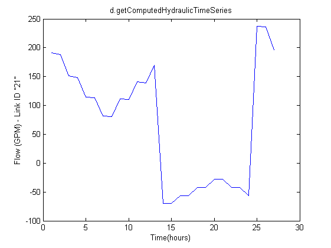
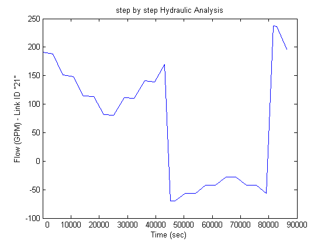
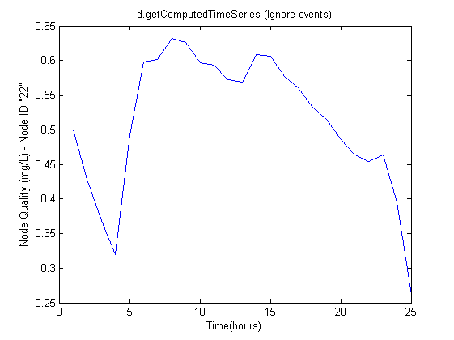
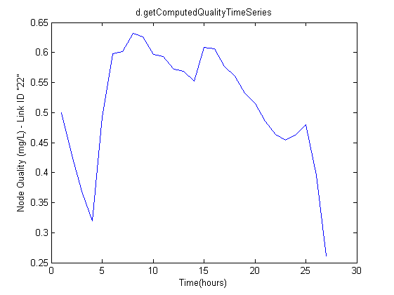
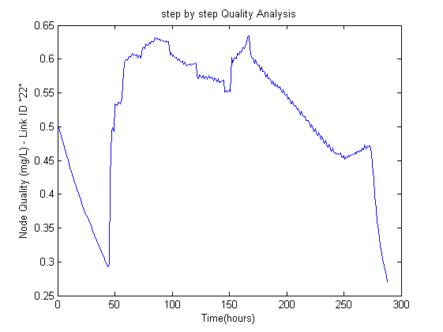

clear all; close all; clc;
addpath(genpath(pwd));
d=epanet('Net1.inp');tic;
Results = d.getComputedTimeSeries
tocResults = toc;tic;
Hydraulics = d.getComputedHydraulicTimeSeries
tocHydraulics = toc;tic;
Quality = d.getComputedQualityTimeSeries
tocQuality = toc;tic;
pipeindex=4;
nodeindex=6;
d.openHydraulicAnalysis;
d.initializeHydraulicAnalysis;
tstep=1; P=[];T=[]; D=[]; H=[];F=[];
while (tstep>0)
t=d.runHydraulicAnalysis;
P=[P; d.getNodePressure];
D=[D; d.getNodeActualDemand];
H=[H; d.getNodeHydaulicHead];
F=[F; d.getLinkFlows];
T=[T; t];
tstep=d.nextHydraulicAnalysisStep;
end
d.closeHydraulicAnalysis
d.openQualityAnalysis
d.initializeQualityAnalysis
tleft=1; P=[];T=[];Q=[];
while (tleft>0)
t=d.runQualityAnalysis;
P=[P; d.getNodePressure];
Q=[Q; d.getNodeActualQuality];
T=[T; t];
tleft = d.stepQualityAnalysisTimeLeft;
end
d.closeQualityAnalysis;
d.unload
disp(['Run Time of function d.getComputedTimeSeries: ', num2str(tocResults), '(sec)'])
disp(['Run Time of function d.getComputedHydraulicTimeSeries: ', num2str(tocHydraulics), '(sec)'])
disp(['Run Time of function d.getComputedQualityTimeSeries: ', num2str(tocQuality), '(sec)'])
figure;
plot(Results.Flow(:,pipeindex));
title('d.getComputedTimeSeries (Ignore events)');
xlabel('Time(hours)'); ylabel(['Flow (',d.LinkFlowUnits{1},') - Link ID "',d.LinkNameID{pipeindex},'"'])
figure;
plot(Hydraulics.Flow(:,pipeindex));
title('d.getComputedHydraulicTimeSeries');
xlabel('Time(hours)'); ylabel(['Flow (',d.LinkFlowUnits{1},') - Link ID "',d.LinkNameID{pipeindex},'"'])
h=figure;
plot(0);axis off
whitebg('w');
figure;
plot(F(:,pipeindex));
title('step by step Hydraulic Analysis');
xlabel('Time(hours)'); ylabel(['Flow (',d.LinkFlowUnits{1},') - Link ID "',d.LinkNameID{pipeindex},'"'])
figure;
plot(Results.NodeQuality(:,nodeindex));
title('d.getComputedTimeSeries (Ignore events)');
xlabel('Time(hours)'); ylabel(['Node Quality (',d.QualityChemUnits,') - Node ID "',d.NodeNameID{nodeindex},'"'])
figure;
plot(Quality.NodeQuality(:,nodeindex));
title('d.getComputedQualityTimeSeries');
xlabel('Time(hours)'); ylabel(['Node Quality (',d.QualityChemUnits,') - Link ID "',d.NodeNameID{nodeindex},'"'])
figure;
plot(Q(:,nodeindex));
title('step by step Quality Analysis');
xlabel('Time(hours)'); ylabel(['Node Quality (',d.QualityChemUnits,') - Link ID "',d.NodeNameID{nodeindex},'"'])
EPANET loaded sucessfuly.
Results =
Time: [25x1 double]
Pressure: [25x11 double]
Demand: [25x11 double]
Head: [25x11 double]
NodeQuality: [25x11 double]
Flow: [25x13 double]
Velocity: [25x13 double]
HeadLoss: [25x13 double]
Status: [25x13 double]
Setting: [25x13 double]
ReactionRate: [25x13 double]
FrictionFactor: [25x13 double]
LinkQuality: [25x13 double]
Hydraulics =
Time: [27x1 double]
Pressure: [27x11 double]
Demand: [27x11 double]
Head: [27x11 double]
TankVolume: [27x11 double]
Flow: [27x13 double]
Velocity: [27x13 double]
HeadLoss: [27x13 double]
Status: [27x13 double]
Setting: [27x13 double]
Energy: [27x13 double]
Efficiency: [27x13 double]
Quality =
Time: [27x1 double]
NodeQuality: [27x11 double]
LinkQuality: [27x13 double]
MassFlowRate: [27x11 double]
EPANET Class is unloaded
Run Time of function d.getComputedTimeSeries: 0.20743(sec)
Run Time of function d.getComputedHydraulicTimeSeries: 0.27288(sec)
Run Time of function d.getComputedQualityTimeSeries: 0.096179(sec)



   